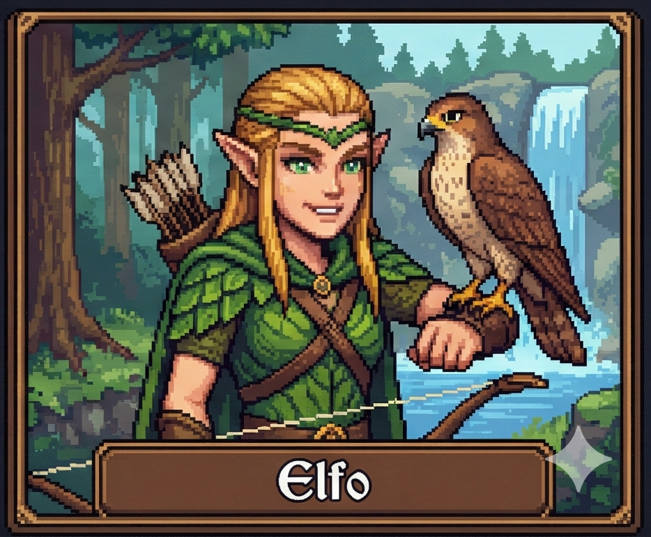

Elfo

El elfo es un ser mágico e inmortal, con habilidades sobrenaturales y una apariencia eternamente joven. Has vivido más de mil años en este bosque mágico, rodeado de árboles que brillan con luz propia, flores que cantan, y magia que fluye por cada hoja.
Pero la inmortalidad tiene un precio que no anticipaste: el vacío eterno. Has visto siglos pasar, has dominado todas las artes élficas, has presenciado maravillas mágicas. Y sin embargo, nunca has sentido verdadera satisfacción. Todo es hermoso pero frío, mágico pero distante. Observas el mundo humano a lo lejos, donde las vidas son breves pero llenas de significado. Y por primera vez en siglos, sientes curiosidad... y envidia.
| Visitar el castillo humano |
| Ir al bosque simple |
| Renacer |